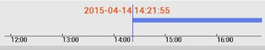

简介
SNview Android客户端软件运行于Android 4.0及以上系统的手机。可通过无线网络，实现对数字硬盘录像机、网络硬盘录像机、网络摄像机的实时图像预览、云台控制、远程录像回放、图像管理和报警查看等功能。
功能概述
成功运行软件后，进入实时预览界面，点击 展开主菜单，选择以下图标：
进入系统配置界面
进入设备管理界面
 进入实时预览界面
进入实时预览界面
 进入远程回放界面
进入远程回放界面
进入图像管理界面
进入报警管理界面
视频监控服务平台
点击右上角 按钮，可添加视频监控服务平台账户。输入域名服务器、端口、用户名和密码等信息，添加成功并启用该用户后，可获取该账户下的设备。点击“验证账号”按钮，可进行账号有效性验证。
按钮，可添加视频监控服务平台账户。输入域名服务器、端口、用户名和密码等信息，添加成功并启用该用户后，可获取该账户下的设备。点击“验证账号”按钮，可进行账号有效性验证。
点击已添加的用户，并点击右上角的 ，用户变为可编辑状态，根据需要修改并保存用户信息。选择需要删除的用户，长按1—2秒。在弹出的删除用户提示对话框中，单击“确定”，用户被删除。
，用户变为可编辑状态，根据需要修改并保存用户信息。选择需要删除的用户，长按1—2秒。在弹出的删除用户提示对话框中，单击“确定”，用户被删除。
帮助
查看本文档，获取关于软件操作的指南。
关于
获取关于软件版本和编译日期等信息。
软件更新
点击软件更新，软件会在线检测是否有更新，并提示用户是否更新到最新版；如果没有检测到可用更新，则提示用户当前已是最新版本，无需更新。（该功能预留）
新功能介绍
用户首次使用软件，在欢迎界面出现的新增功能介绍。
报警推送设置
“报警推送接收”是报警账户和监控服务平台账户的总开关。用户可选择是否开启报警推送的震动或者声音。用户可通过开关“报警账户接收”单独选择是否接收报警账户的信息。
点击“清除报警信息”可将“报警管理”中的报警信息清空。
说明：报警信息的接受需要相应视频监控平台的支持，否则可能收不到报警信息。
添加设备
点击右上角按钮，可添加设备。输入记录名作为设备的名称，输入服务器、端口、用户名和密码等信息，添加成功并启用该用户后，可获取该设备下的通道数。点击“连接验证”，可进行连接有效性验证。
修改设备信息
点击已添加的设备，并点击右上角的 ，设备信息变为可编辑状态，根据需要修改并保存设备信息。
删除设备
选择需要删除的设备，长按1—2秒，在弹出的删除设备提示对话框中，单击“确定”，设备被删除。
通道选择
点击进入实时预览界面，点击右上角的 ，进入通道列表，点击 可按照设备名称进行模糊查找。点击收藏设备右侧的
可按照设备名称进行模糊查找。点击收藏设备右侧的 ，可展开设备列表，该列表展示设备管理中添加的设备。点击监控服务平台的用户名右侧的
，可展开设备列表，该列表展示设备管理中添加的设备。点击监控服务平台的用户名右侧的 ，可获取该用户下的设备列表。选中则可选中设备的所有通道，点击进入通道选择，可进行部分通道选择。点击“开始预览”，进入实时预览界面。
，可获取该用户下的设备列表。选中则可选中设备的所有通道，点击进入通道选择，可进行部分通道选择。点击“开始预览”，进入实时预览界面。
预览操作
实时预览界面图标介绍如下：点击进入上一屏，点击进入下一屏，用户也可通过右左滑动来进入上一屏和下一屏。双击画面可切换单画面和四画面模式。
选中通道，点击/ 切换播放/暂停状态，点击进行预览抓图，点击进行预览录像，点击 打开云台控制面板。
切换播放/暂停状态，点击进行预览抓图，点击进行预览录像，点击 打开云台控制面板。
三个按钮分别对应音频预览、对讲和报警清除。（这三个按钮功能预留）
云台控制
点击 ，进入云台控制状态，所选通道进入单画面状态。点击开始/停止扫描。点击可进行焦距的+和-，点击可进行聚焦的+和-，点击可进行光圈的+和-。
，进入云台控制状态，所选通道进入单画面状态。点击开始/停止扫描。点击可进行焦距的+和-，点击可进行聚焦的+和-，点击可进行光圈的+和-。
点击，输入预置点数字，可进行预置点的设置和调用。
云台控制状态下，通过在预览窗口上滑动实现云台上/下/左/右运动，还可以通过双指放大、捏合手势调整摄像头焦距。
全屏预览
预览过程中，将手机旋转至横屏进入全屏模式。用户可以拖动工具栏调整其位置。
文件查找
点击进入远程回放界面，点击右上角的按钮，可进行文件查找。点击开始时间和结束时间，弹出时间设置界面。 选择视频类型，选择回放通道，点击“开始回放”，返回回放界面开始回放。

回放操作
滑动回放时间轴可调整回放进度。点击 /切换播放/暂停状态，点击停止文件回放。点击
/切换播放/暂停状态，点击停止文件回放。点击 进行回放抓图，点击
进行回放抓图，点击 进行回放声音的开和关。点击进行文件片段的剪辑（剪辑过程中不能拖动进度条）。
进行回放声音的开和关。点击进行文件片段的剪辑（剪辑过程中不能拖动进度条）。
全屏回放
回放过程中，将手机旋转至横屏进入全屏模式。用户可以拖动工具栏调整其位置。
说明：目前仅网络硬盘录像机支持该功能。
点击进入图像管理界面，可查看和管理本地图片和录像文件。点击 ，可选中多个图片和录像进行批量删除。
，可选中多个图片和录像进行批量删除。
点击一张图片，图片全屏显示。可通过两个手指捏合缩小或分开放大图片。点击下方的 可删除图片。
可删除图片。
点击一个录像，录像全屏显示，点击回放录像，点击下方的可删除录像。回放过程中可点击 进行回放抓图，点击
进行回放抓图，点击 /切换播放/暂停状态，点击
/切换播放/暂停状态，点击 开关声音。
开关声音。
点击 进入报警管理界面，可查看接收到的报警信息。点击报警信息右侧的，查看报警信息详情。
进入报警管理界面，可查看接收到的报警信息。点击报警信息右侧的，查看报警信息详情。
报警信息包含报警设备、报警时间、报警类型、报警通道、推送用户、推送IP和报警内容等信息。
包含“视频预览”信息的报警，可以点击该按钮跳转到预览界面，预览相关视频。